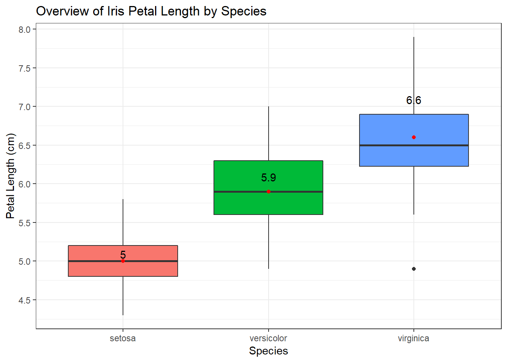

Tác giả: Nguyễn Hải Trường | 2018-09-14
Trong quá trình phân tích dữ liệu, ngoài việc đưa ra những con số thống kê “khô khan” chúng ta cần phải minh họa những con số bằng những hình vẽ hoặc biểu đồ để thu hút người đọc khi trình bày với đơn vị kinh doanh hay đối tác.
Như các bạn đã biết, package ggplot2 trong R có thể giúp chúng ta “visualize” một cách dễ dàng và đẹp mắt, hay nói cách khác là biến những con số “khô khan” thành những con số biết nói. Trong các biểu đồ, boxplot là một biểu đồ đặc biệt hiệu quả để so sánh giữa các nhóm. Trong bài viết này, Ranalytics sẽ hướng dẫn các bạn một số tips để xây dựng biểu đồ boxplot hiệu quả.
# Loading package
library(dplyr)
library(ggplot2)Ví dụ chúng ta vẽ 1 biểu đồ boxplot đơn giản như sau:
# Sử dụng dữ liệu "iris" có sẵn trong R
data("iris")
iris %>%
ggplot(aes(Species, Sepal.Length, fill = Species)) +
geom_boxplot()labs()
Trong trường hợp này, đầu tiên chúng ta cần thêm tiêu đề biểu đồ, thay đổi tiêu đề trục (X,Y) để người đọc có thể hiểu biểu đồ của chúng ta đang mô tả điều gì, chúng ta thêm + labs().
Ngoài ra, chúng ta cũng nên chia nhỏ các mốc giá trị trên trục Y (biến số Petal.Length) để người đọc có thể dễ dàng ước lượng được các giá trị quantile 25, median, quantile 75 của biến X (Species) một cách tương đối. Chúng ta thêm + scale_y_continuous().
iris %>%
ggplot(aes(Species, Sepal.Length, fill = Species)) +
geom_boxplot() +
labs(title = "Overview of Iris Petal Length by Species",
x = "Species",
y = "Petal Length (cm)") +
scale_y_continuous(breaks = seq(0,10, by = 0.5))Như vậy, chúng ta có thể hiểu biểu đồ trên mô tả tổng quan về độ dài cánh hoa (đơn vị: cm) của 3 loài hoa khác khau (setosa, versicolor, virginica).
geom_text()
Tiếp theo, giả sử chúng ta muốn thêm và visualize thông tin về độ dài trung bình cánh hoa của 3 loài hoa trên, chúng ta thêm + geom_text().
Trong trường hợp này, chúng ta sẽ biểu diễn độ dài trung bình cánh hoa của các loài hoa bằng những điểm màu đỏ tương ứng trên biểu đồ, + geom_point() để vẽ biểu đồ điểm.
# Tạo thêm 1 dataframe tính độ dài trung bình cánh hoa của các loài hoa
mean_sepal_length_by_species <- iris %>%
group_by(Species) %>%
summarise(mean_sepal_length = mean(Sepal.Length)) %>%
as.data.frame
# Xem dữ liệu được tổng hợp
mean_sepal_length_by_species## Species mean_sepal_length
## 1 setosa 5.006
## 2 versicolor 5.936
## 3 virginica 6.588iris %>%
ggplot(aes(Species, Sepal.Length, fill = Species)) +
geom_boxplot() +
labs(title = "Overview of Iris Petal Length by Species",
x = "Species",
y = "Petal Length (cm)") +
scale_y_continuous(breaks = seq(0,30, by = 0.5)) +
geom_point(aes(x = Species,
y = round(mean_sepal_length,1)),
data = mean_sepal_length_by_species,
col = "red") +
geom_text(aes(label = round(mean_sepal_length,1),
x = Species,
y = round(mean_sepal_length,1)),
data = mean_sepal_length_by_species,
check_overlap = TRUE,
vjust = -0.5)Như vậy, chúng ta thấy giá trị trung bình độ dài cánh hoa của 2 loài hoa (setose & versicolor) xấp xỉ bằng giá trị trung vị, trong khi đó đối với loài hoa virginica thì giá trị trung bình độ dài cánh hoa lớn hơn 1 chút so với giá trị trung vị.
theme()
Để biểu đồ trông đẹp mắt và “clean” hơn, chúng ta có thể thay đổi background (dùng theme_bw(), theme_classic(), theme_dark()…) và loại bỏ những chi tiết nhỏ không cần thiết trong biểu đồ tùy vào từng trường hợp như: gridlines, tiêu đề và giá trị trên trục X,Y, tiêu đề và giá trị của legend… bằng việc thêm option + theme()
Trong trường hợp này, chúng ta dùng background đen trắng theme_bw() để biểu đồ trông “clean” và dễ nhìn hơn. Ngoài ra, chúng ta có thể loại bỏ những chi tiết thừa trên biểu đồ như: gridlines, ticks, giá trị và tên trục X do chúng ta đã có phần legend mô tả điều đó.
iris %>%
ggplot(aes(Species, Sepal.Length, fill = Species)) +
geom_boxplot() +
labs(title = "Overview of Iris Petal Length by Species",
x = "", # Bỏ tên trục X
y = "Petal Length (cm)") +
scale_y_continuous(breaks = seq(0, 10, by = 0.5)) +
geom_point(aes(x = Species, y = round(mean_sepal_length, 1)),
data = mean_sepal_length_by_species, col = "red") +
geom_text(aes(
label = round(mean_sepal_length, 1),
x = Species,
y = round(mean_sepal_length)
),
data = mean_sepal_length_by_species,
check_overlap = TRUE,
vjust = -0.3
) +
theme_bw() + # Background đen trắng
theme(
# Bỏ gridlines trục X
panel.grid.major.x = element_blank(),
# Bỏ tên giá trị trục X
axis.text.x = element_blank(),
# Bỏ ticks trục X
axis.ticks.x = element_blank()
)Hoặc một cách khác, chúng ta có thể bỏ phần legend đi vì trên trục X đã mô tả những thông tin đó (+ theme(legend.position = "none")).
iris %>%
ggplot(aes(Species, Sepal.Length, fill = Species)) +
geom_boxplot() +
labs(
title = "Overview of Iris Petal Length by Species",
x = "Species",
y = "Petal Length (cm)") +
scale_y_continuous(breaks = seq(0,10, by = 0.5)) +
geom_point(aes(x = Species,
y = round(mean_sepal_length,1)),
data = mean_sepal_length_by_species, col = "red") +
geom_text(aes(label = round(mean_sepal_length,1),
x = Species, y = round(mean_sepal_length)),
data = mean_sepal_length_by_species, check_overlap = TRUE, vjust = -0.3) +
theme_bw() + # Background đen trắng
theme(legend.position = "none") # Bỏ legend
Như vậy, chúng ta đã vừa nắm đưcọ một số cách cơ bản để trình bày boxplot hiệu quả với ggplot2. Chúc các bạn học tập và làm việc hiệu quả với Ranalytics.vn!